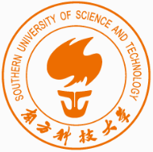
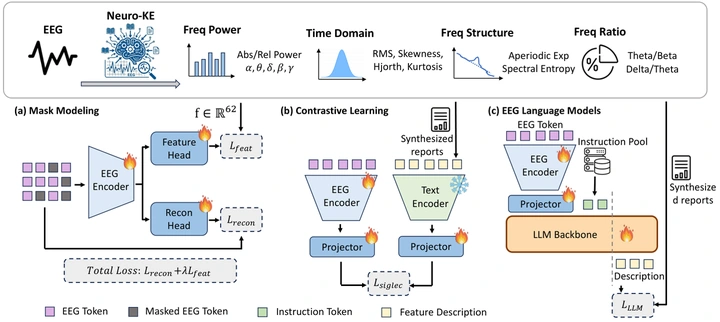
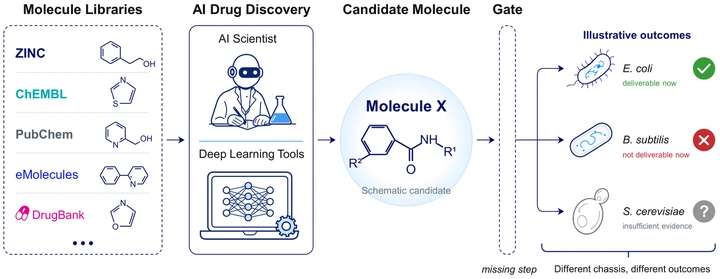
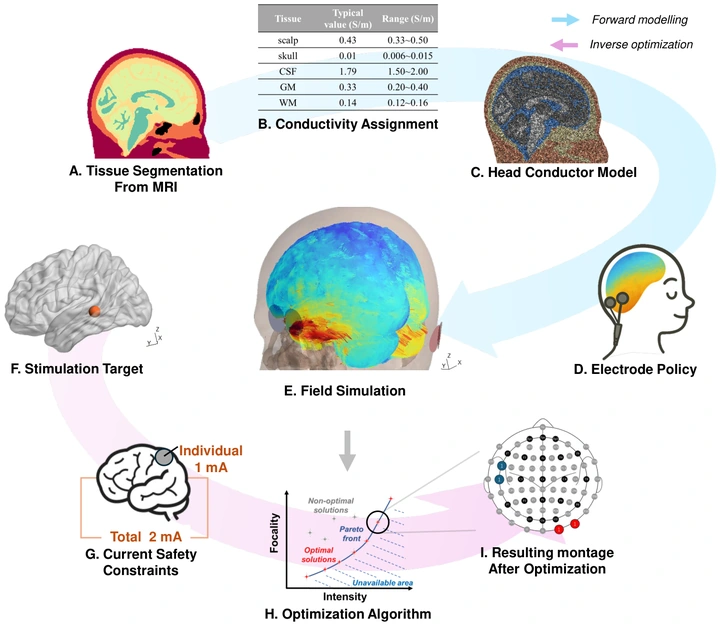
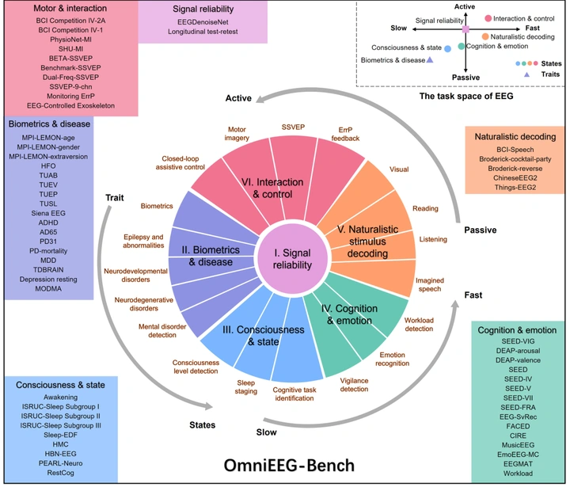
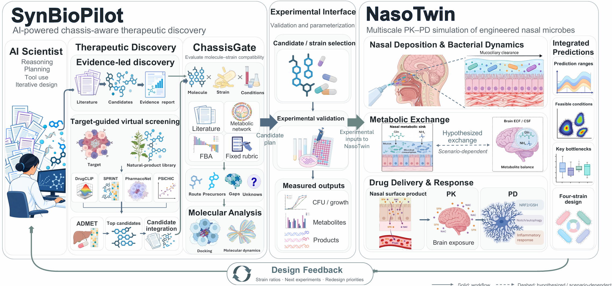

Brain–Computer Interface Algorithm Intern | Omni-Intelligence
Mar 2026 – PresentWorking on EEG foundation model pretraining and post-training, recursive self-improvement, and EEG-driven approaches to embodied intelligence.
Hi! I'm Xiang Chen (陈翔), a senior undergraduate majoring in Intelligent Medical Engineering at the Southern University of Science and Technology (SUSTech). I will join the Tsinghua SIGS–SUSTech Joint Ph.D. Program in Biomedical Engineering in Fall 2027. My research interests include EEG foundation models, neuroscience-informed representation learning, affective brain–computer interfaces, and AI for Science.
I conduct research under the supervision of Prof. Quanying Liu at the Neural Computation and Control (NCC) Lab, focusing on developing EEG foundation models that integrate neurophysiological knowledge and generalize across subjects, datasets, and tasks. I am currently a Brain–Computer Interface Algorithm Intern at Omni-Intelligence. Previously, I conducted summer research at NYU Shanghai under the supervision of Prof. Xing Tian, studying neural timescales in SEEG during multimodal language tasks.
Our paper Neuro-KE was accepted to NeurIPS 2026.
Our paper ChassisGate was accepted to IEEE BIBM 2026 as a regular paper.
Received the Best Student Oral Presentation Award at WACBE 2026 in Changzhou, China.
Ph.D. in Biomedical Engineering
Shenzhen, China

B.Eng. in Intelligent Medical Engineering
Shenzhen, China
Working on EEG foundation model pretraining and post-training, recursive self-improvement, and EEG-driven approaches to embodied intelligence.
Conducting research on EEG foundation models, neurophysiology-informed representation learning, and computational neuromodulation under the supervision of Prof. Quanying Liu.
Investigated intrinsic neural timescales in SEEG during multimodal language processing under the supervision of Prof. Xing Tian.
† Equal contribution * Corresponding author

NeurIPS 2026 · Poster

IEEE BIBM 2026 · Regular Paper

Journal of Neural Engineering · 2026

Dry Lab Leader · SynBioPilot & NasoTwin
Led the development of two computational frameworks: SynBioPilot for AI-guided molecular discovery and chassis-specific biosynthetic feasibility assessment, and NasoTwin for multiscale simulation and optimization of engineered microbial systems.

Dry Lab Leader · iGEM Silver Medal · SynBio Challenges Silver Award
Developed physics-informed neural networks for 3D molecular diffusion and kinetic models of c-di-GMP release and STING-mediated macrophage polarization to guide engineered bacterial immunotherapy design.
Project Wiki12th World Congress on Bioengineering (WACBE) · Changzhou, China
Project Lead · Foundation Model for Multi-Center Heterogeneous Brain Signal Decoding
Emotion Recognition Track · Joint 1st on the public leaderboard
Southern University of Science and Technology (SUSTech)
Southern University of Science and Technology (SUSTech)